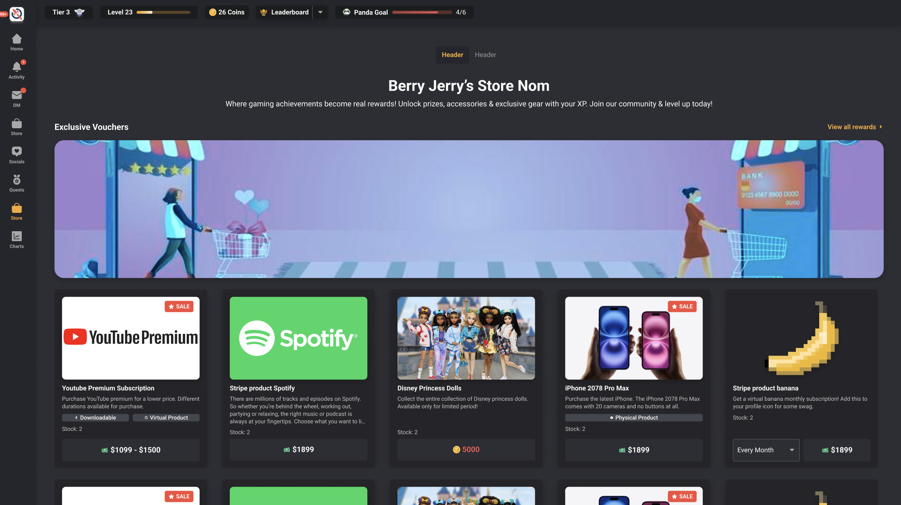
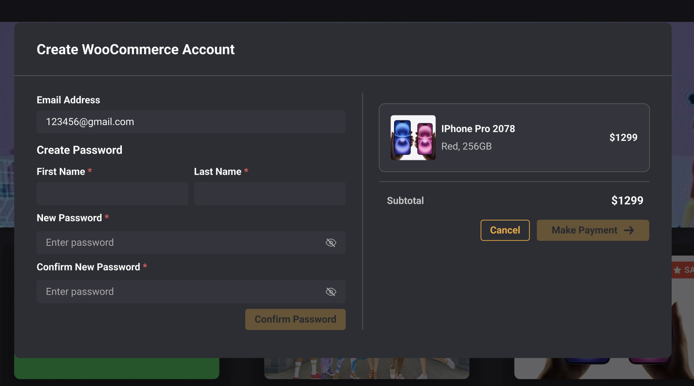
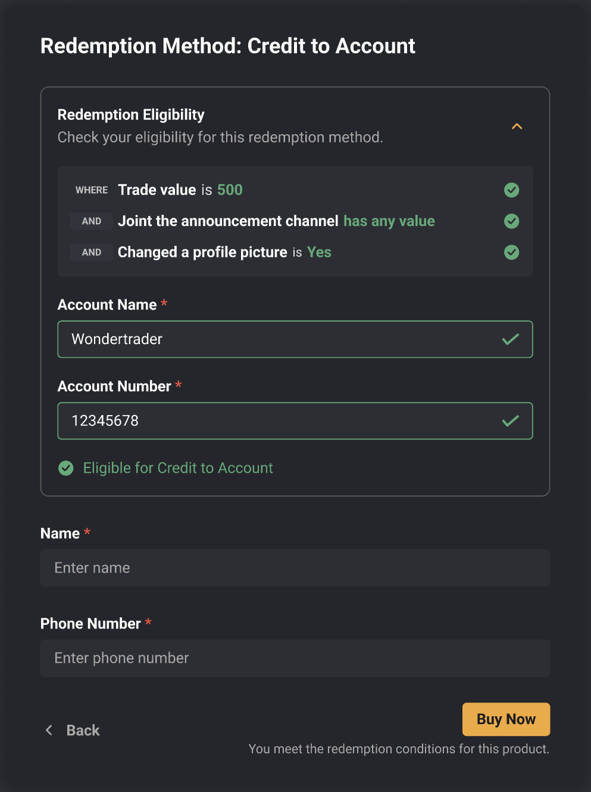
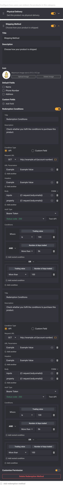
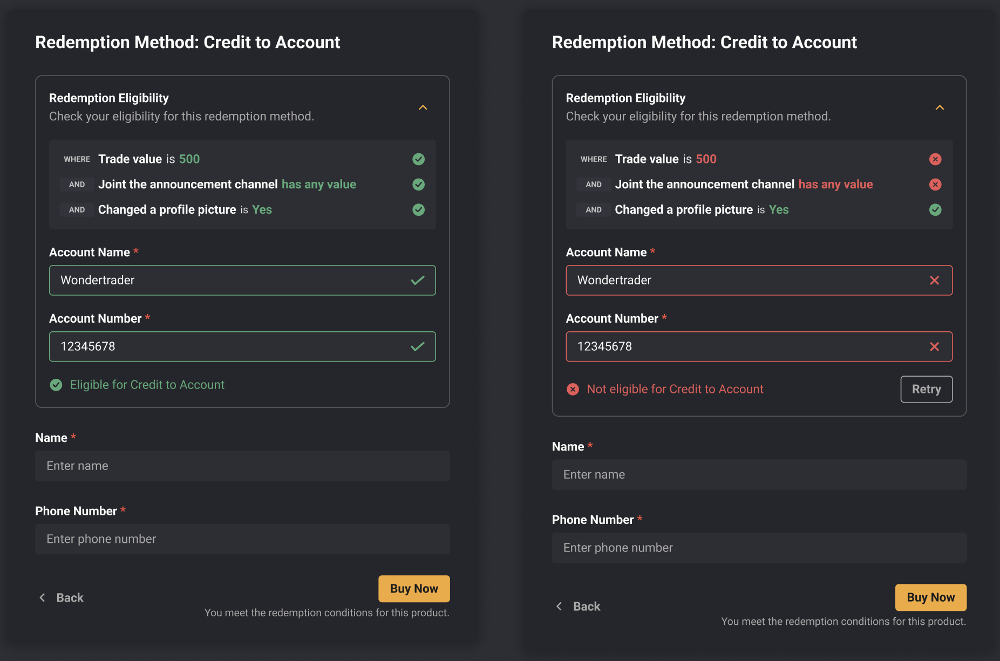
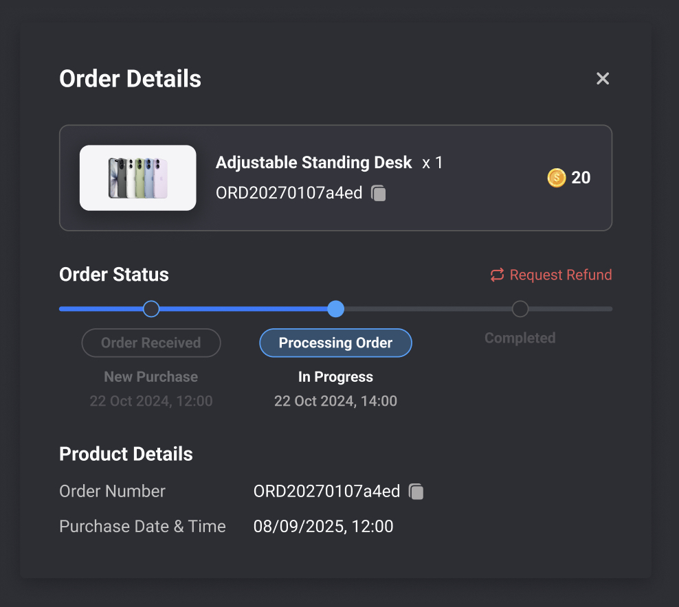
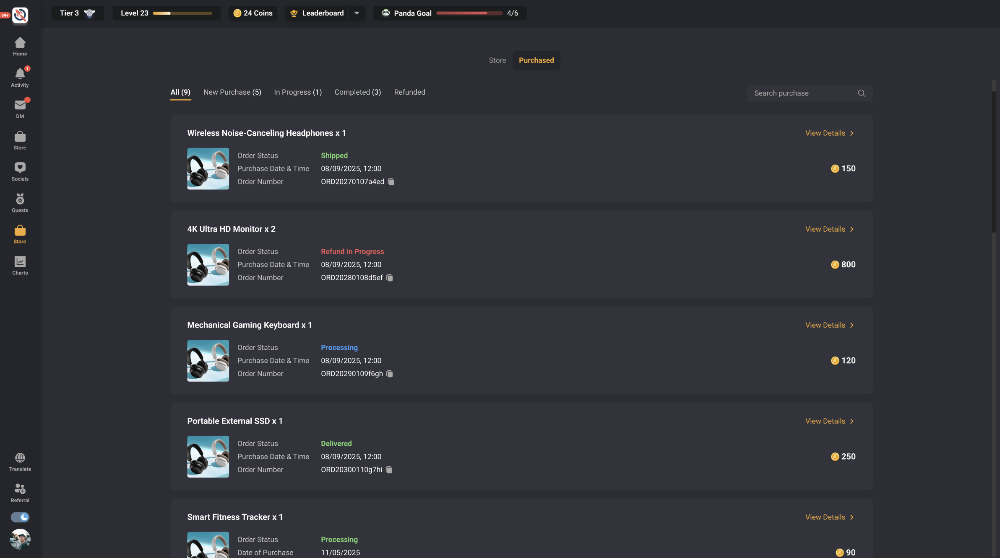
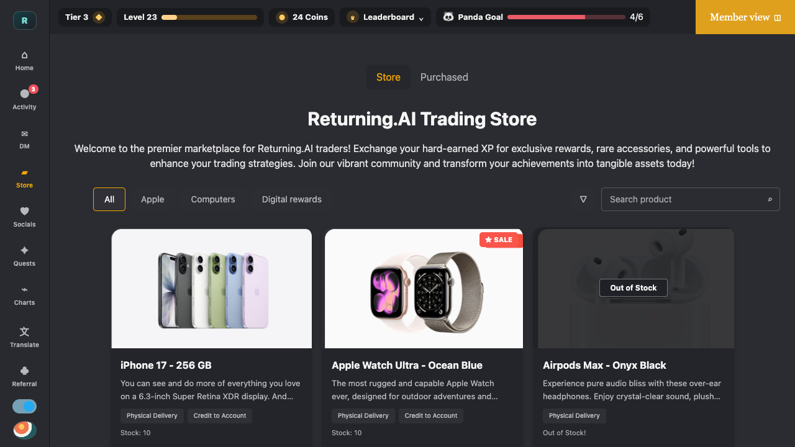

Store redesign · Product definition, interaction and implementation
I redesigned a rigid reward catalogue from the logic up.
The previous Store exposed products and a generic checkout. I restructured it around redemption methods, eligibility, role-based access, route-specific fields and a visible post-purchase lifecycle.

Scope and evidence. I identified the product problems, defined the new requirements, redesigned the Store system and built a working localhost implementation. I then handed the working behaviour to engineering for implementation in the application repository. Preserved screens and localhost evidence do not prove that every later phase shipped or produced measured business impact.
Three source types appear in this case study. They are never used interchangeably.
- Actual product
- Redacted client or platform capture
- Localhost build
- Working local implementation or test
- Figma
- Design intent, not product proof
Before the redesign
The Store sold rewards, but it did not model how traders received them.
The previous experience followed a conventional catalogue and checkout pattern. That structure became the product problem once rewards needed different fulfilment routes, eligibility rules and account data.


- CatalogueOne product led to one generic action.
The cards showed what a reward cost, but not whether it would be delivered, credited to an account or handled another way.
- ProductFulfilment logic had nowhere to live.
The modal described a “Virtual Product” and exposed one Buy Now action without access, conditions or route-specific information.
- CheckoutThe flow collected commerce-account data, not redemption data.
Creating a WooCommerce password could not adapt to an address, trading account or other information required by a specific method.
New product requirements
The redesign had to become a rules system, not a better-looking catalogue.
These requirements came from the different ways a trader could qualify for, receive and track the same reward.
- RedemptionSupport multiple ways to receive one product.
A reward could use physical delivery, credit to account or another configured method.
- DataCollect only the fields required by the selected method.
Fields such as address, phone number or trading account could map to existing platform data and be required before purchase.
- EligibilityEvaluate conditions before allowing purchase.
Conditions could be configured in the platform or evaluated through code and APIs.
- AccessResolve permissions across Store, category and product.
Roles could inherit or override cannot view, can view and full access; full access could also define limits and special pricing.
- OperationsKeep the purchase visible after confirmation.
Products needed configurable defaults within New Purchase, In Progress, Completed and Refunded, including a traceable refund path.
Redemption methods
“Buy” was the wrong first question.
The clearer question was: how do you want to receive the value? The same iPhone can be delivered or converted to trading credit, and the choice changes everything that follows.

Route decision · iPhone 17 · 600 coins
Choose a redemption method
Synthetic walkthrough based on the preserved product model. It sends and saves nothing.
- MethodCredit to account
Exchange the product value for trading credit.
- Required fieldsTrading account · Account name
The method decides which information is collected.
- EligibilityVerify account and eligible value
Configured rules run before purchase becomes valid.
- Tracked outcomeCredit request enters purchase history
The trader and operator now share a visible status trail.
Make the logic visual
A redemption method became a small configurable product.
The interface turned content, fields, conditions and permissions into a visible object that product, design and engineering could review together.
- Content
- Icon
- Custom fields
- Conditions
- Permissions
Credit to account · configured method


Scroll the exact Figma configuration. Its trader-facing eligibility result stays in view.
Product access
Access became an inherited product rule.
Cannot view hides a product. Can view lets a role inspect it. Full access unlocks purchase limits and role-specific pricing.
Store establishes the baseline; category and product can inherit it or apply a more specific rule.

Purchase lifecycle
Confirmation starts the operational story. It does not end it.
Each Store can define statuses inside four stable categories. A product or category chooses its default status, and a refund becomes a visible branch of the same lifecycle.


From model to implementation
The design moved through a working artifact.
I made the purchase model visual in HTML, tested it locally in the product context, then handed that working behavior to engineering for implementation in the application repository.
The handoff carried behavior, not just pixels.
Redemption routes, role resolution, required fields and the post-purchase trail were visible together. Engineering could inspect a coherent system instead of reconstructing it from disconnected mockups.

Evidence boundary
What each artifact can—and cannot—prove.
The case study separates design intent, local behavior and observed product surfaces. That makes the story stronger without turning reconstruction into a rollout claim.
Supports the model and screen hierarchy. It does not prove implementation.
Supports the local flow and handoff logic. It does not prove backend or production parity.
Supports the visible client experience. It does not prove adoption or business impact.
The point of the redesign